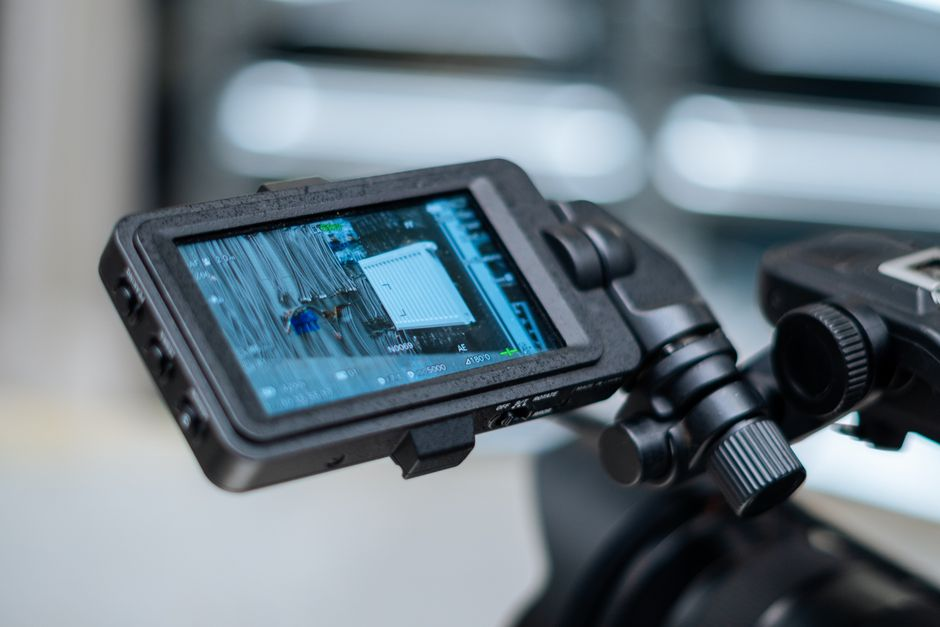
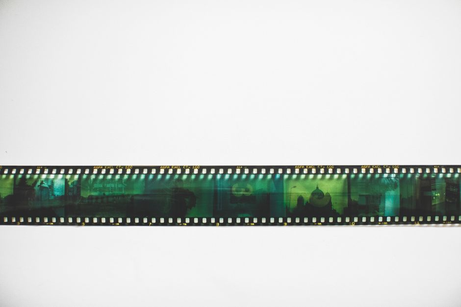

Video Understanding vs Image Classification: The Extra Axis
Adding time to vision problems does not just add a dimension to your tensor. It quietly invalidates several assumptions that make image classification tractable and safe to evaluate.
Why this matters more than it looks
When people move from image classification to video, the instinct is to treat it as the same problem with an extra dimension bolted on. Stack frames, add a temporal pooling layer or a 3D convolution, and carry on as before. I understand the appeal: the label sets often look similar, the loss functions are the same cross-entropy you already know, and the architectures are recognisable cousins of the image networks you have used for years. But this framing hides a set of assumptions that image classification quietly relies on, assumptions that video breaks almost immediately.
Image classification, at its core, assumes that each example is an independent draw from some distribution. A photograph of a dog and a photograph of a cat are, for practical purposes, unrelated events. This independence is what makes random train/test splitting sound: shuffle the dataset, hold out twenty percent, and you get a fair estimate of generalisation. Video breaks this in a way that is easy to miss and expensive to ignore, because a video is not a bag of independent images. It is a sequence of highly correlated frames drawn from a small number of underlying events.
This matters practically because the entire evaluation culture of computer vision, the train/test protocols, the reported accuracy figures, the intuitions we carry from ImageNet-era benchmarking, were built for the independent case. Applying them unchanged to video does not just introduce noise. It systematically inflates reported performance and can lead teams to ship models that look excellent on paper and disappoint in deployment.
The leakage problem, made concrete
Consider a simple worked example. Suppose you have footage from fifty different sporting matches, each match contributing around two thousand frames after sampling. Your task is to classify the type of action occurring in short clips: a pass, a tackle, a shot. If you take all one hundred thousand frames, shuffle them randomly, and split ninety-ten into train and test, you will almost certainly end up with frames from the same match, sometimes the same rally, on both sides of the split.
Two consecutive frames half a second apart are nearly identical: same players, same kit, same lighting, same camera angle, same crowd in the background. If frame 4,001 from match seventeen is in your training set and frame 4,003 from the same match is in your test set, your model does not need to understand the action at all. It can memorise incidental details, the colour of a specific advertising board, the exact stadium lighting, the particular jersey number visible in the corner, and use those as shortcuts. Your reported test accuracy might read ninety-four percent, but that number describes how well the model recognises which match a clip came from, not whether it understands tackles versus passes.
The honest fix is to split by match, not by frame. All frames from a given match go entirely into train or entirely into test, never both. When teams make this change, it is common to see accuracy drop by ten, fifteen, sometimes twenty percentage points, not because the model got worse, but because the earlier number was never measuring generalisation in the first place. This is the single most common mistake I see in video pipelines, and it is entirely invisible unless you specifically think about how the split was constructed.
The same issue appears in other guises: overlapping clips sampled with a sliding window from the same source video, multiple camera angles of the same event treated as separate examples, or augmented copies of a clip ending up on both sides of a split. In every case the underlying cause is identical: the temporal axis introduces strong correlation structure that a naive shuffle does not respect.

Beyond leakage: what the model actually has to learn
Even once splitting is done correctly, the extra dimension changes what generalisation means. In image classification, a model has to be invariant to things like lighting, pose, and background clutter within a single frame. In video, it additionally has to reason about order and duration. Reversing the frames of a clip of someone opening a door produces a physically implausible sequence, but a model that only pools frame-level features without attending to order cannot tell the difference. It may achieve a respectable accuracy on an action recognition benchmark using nothing but static appearance cues, such as recognising a swimming pool implies swimming, without ever encoding motion.
This is worth testing directly rather than assuming. A useful diagnostic is to shuffle the frame order within each clip at evaluation time and see how much accuracy degrades. If performance barely drops, the model is likely relying on scene and object recognition rather than genuine temporal reasoning, and it is effectively behaving like an image classifier wearing a video-shaped costume. I would treat a small drop as a warning sign worth investigating rather than a badge of robustness, because it usually means the temporal signal was never load-bearing.
There is also a practical cost dimension. A single 3D convolutional pass over a sixteen-frame clip at moderate resolution can require an order of magnitude more compute than classifying one still image, purely because you are processing sixteen times the pixels through a network with additional temporal parameters. Teams often underestimate this when scoping projects, budgeting for image-classification-level compute and then being surprised when training runs take days instead of hours. Sampling strategy, frame rate, and clip length are not just tuning knobs; they are decisions with direct cost implications that image classification never forced you to confront.
A practical takeaway
If you are moving a project from images to video, treat the temporal axis as a genuine change in problem structure, not a cosmetic addition. Split your data by source event, session, or subject, never by individual frame, and check for near-duplicate leakage across sliding windows. Run a frame-shuffle ablation before trusting any headline accuracy figure, and budget compute and storage as if you are training on a much larger dataset, because in an important sense you are. None of this requires exotic tooling; it requires being honest about what independence assumptions your evaluation protocol is quietly making, and checking whether video actually satisfies them.
